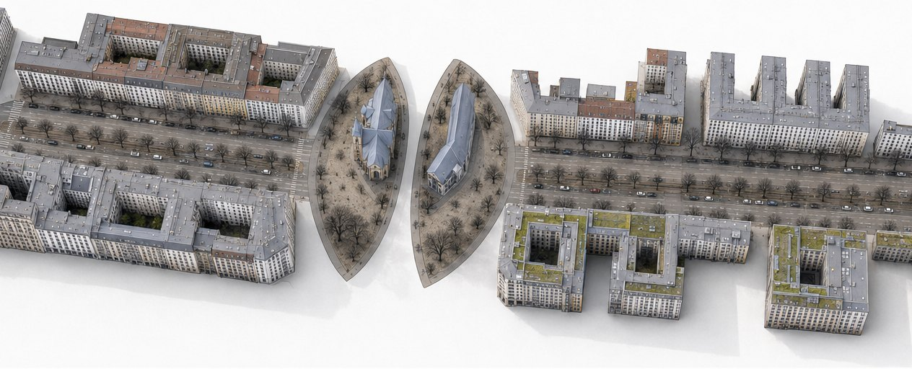
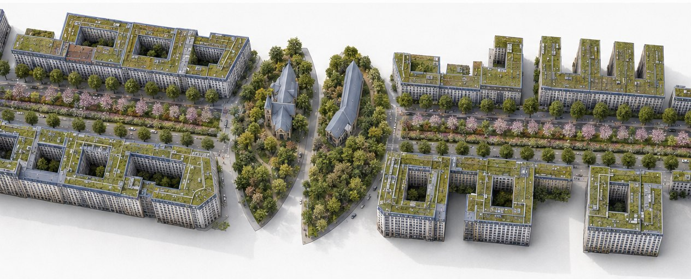

Klimaangepasste Quartiere planen und erlebbar machen
ENVGEOWISE verbindet Geodatenanalyse, eigene Felduntersuchungen, Begrünungs- und Freiraumplanung sowie konkrete Anwendungen, um Klimaanpassungsmaßnahmen für Stadtquartiere nicht nur zu planen, sondern auch im Alltag der Menschen nutzbar zu machen.
Der Hintergrund
Hitzewellen treffen dicht bebaute, stark versiegelte Stadtquartiere besonders hart, und innerhalb dieser Quartiere besonders ältere Menschen, Menschen mit Behinderung und Schwangere. ENVGEOWISE entsteht aus einer universitär betreuten Untersuchung des Schillerkiez in Berlin-Neukölln: 303 Gebäude, 702 Straßen und 143 Flächennutzungen wurden analysiert, 73 Hitze-Hotspots identifiziert und konkrete Maßnahmen kartiert, von Straßenbäumen über Klimaparks bis zu begrünten Dächern und Fassaden.
Vorher und Nachher
So soll sich die Schillerpromenade verändern: beidseitige Straßenbäume, begrünte Dächer und Fassaden, ein kleiner Stadtwald und eine klimaangepasste Mischpflanzung. Schieben Sie den Regler, um den heutigen und den geplanten Zustand zu vergleichen.


Geplant (KI-Visualisierung) HeuteBedienung auch mit den Pfeiltasten möglich.
- 73Hitze-Hotspots
- 1.434geplante Straßenbäume
- 27 + 30begrünte Dächer und Fassaden
- 21 + 9Urban-Forest-Flächen und Klimaparks
Der geplante Zustand ist eine KI-gestützte Visualisierung der geplanten Maßnahmen, kein umgesetzter Zustand.
Module
Eine App und Web-Anwendung, die die kartierten kühlen Orte des Schillerkiez während Hitzewellen nutzbar macht: Straßenbäume, Klimaparks, Sitzgelegenheiten und Kühlinseln auf dem Weg, barrierefrei gestaltet für alle, vor allem aber für ältere Menschen, Menschen mit Behinderung und Schwangere.
Schattenwege öffnen →Über das Projekt
Die zugrundeliegende Schillerkiez-Untersuchung ist eine universitär betreute Forschungsarbeit von Ruth Tchami im Modul Landschafts- und Umweltplanung an der Berliner Hochschule für Technik, Fachbereich Life Sciences and Technology, Studiengang UPFM. Sie umfasst Geodatenanalyse mit amtlichen ALKIS-Daten, OpenStreetMap, Python und QGIS ebenso wie die planerische Entwicklung konkreter Begrünungs- und Freiraummaßnahmen und eine KI-gestützte 3D-Visualisierung.